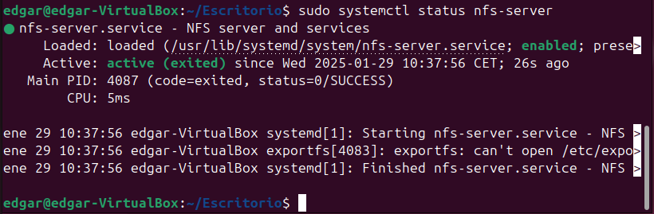

6.Servidor NFS
Servidors NFS El Network File System (NFS) és un protocol que permet compartir fitxers i directoris a través d’una xarxa, facilitant així l’accés a recursos de manera centralitzada. Gràcies a NFS, un servidor pot exportar directoris, i els clients poden muntar-los com si fossin propis, sense notar diferència entre un fitxer local i un de la xarxa. Aquesta funcionalitat resulta especialment útil en entorns col·laboratius o en sistemes distribuïts on diversos equips necessiten accedir als mateixos fitxers.
Una de les característiques principals d’aquest protocol és que l'autenticació es fa a nivell de màquina i no d’usuari. Això implica que el servidor NFS confia en els dispositius clients als quals ha concedit permís per accedir als directoris compartits. Gràcies a la combinació de NFS i LDAP, és possible centralitzar els directoris personals dels usuaris i muntar-los automàticament en qualsevol dispositiu de la xarxa, garantint així una experiència d’usuari homogènia independentment de l’equip utilitzat.
Instal·lació part server Comencem configurant la part del servidor NFS en un sistema Linux. Per fer-ho, instal·larem el paquet necessari per al servidor NFS:
apt install nfs-kernel-server

Un cop finalitzada la instal·lació, cal verificar que el servei s'ha activat correctament:
systemctl status nfs-server

Si el servei està en execució sense errors, ja tenim el servidor NFS instal·lat i a punt per configurar-lo.
Instal·lació part client Ubuntu Ara configurarem un client NFS en una màquina Ubuntu. Els passos són similars: primer, instal·lem els paquets necessaris per poder connectar-nos a un servidor NFS:
apt install nfs-common rpcbind
Amb això, el sistema ja està preparat per muntar directoris compartits mitjançant NFS.
Instal·lació part client Windows Si volem connectar un equip Windows a un servidor NFS, hem d'activar una funcionalitat específica dins del sistema operatiu.
Per fer-ho, seguirem aquests passos:
Obrim el Panell de Control. Accedim a Programes i Característiques. A l'esquerra, fem clic a Activar o desactivar les característiques de Windows. Busquem i activem les opcions relacionades amb NFS.
 Un cop activades les funcionalitats corresponents, el sistema Windows ja estarà preparat per muntar unitats NFS i accedir als recursos compartits del servidor.
Un cop activades les funcionalitats corresponents, el sistema Windows ja estarà preparat per muntar unitats NFS i accedir als recursos compartits del servidor.